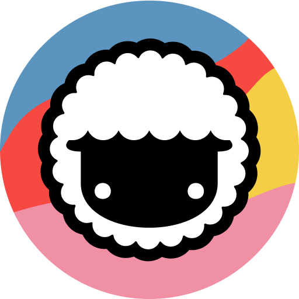
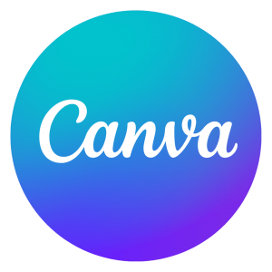

Aqui estão algumas sugestões de I.As. para você usar no seu dia-a-dia
• Essa I.A. te ajudará em pesquisas, te ajudando a coletar e organizar informações de PDFs e vídeos do Youtube.

• Combina gestão de tarefas com assistência de IA para automatizar agendamentos e organização de tarefas.
